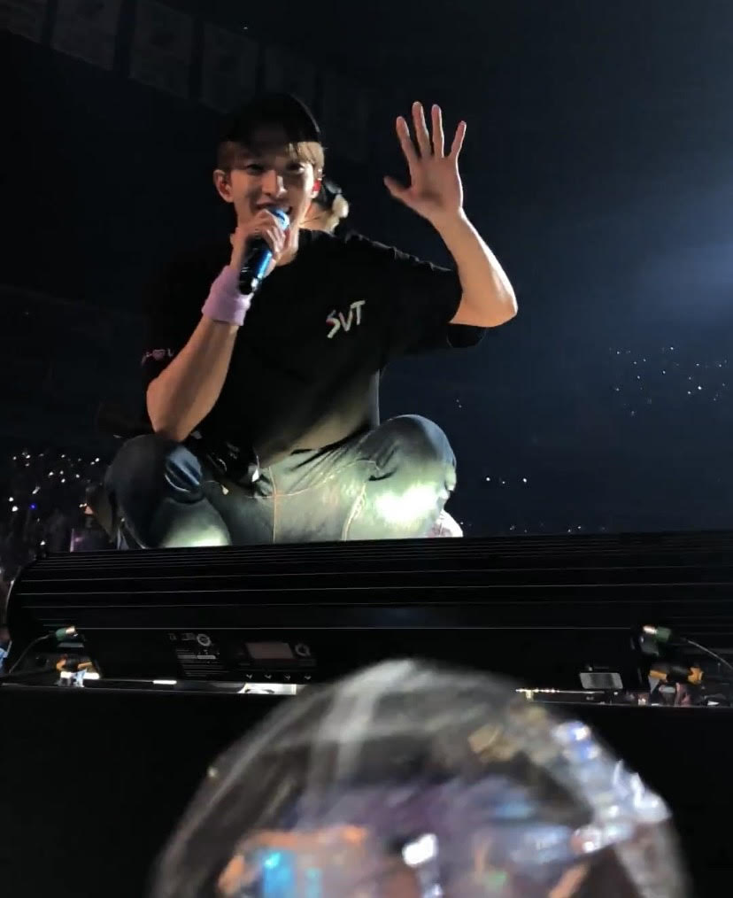
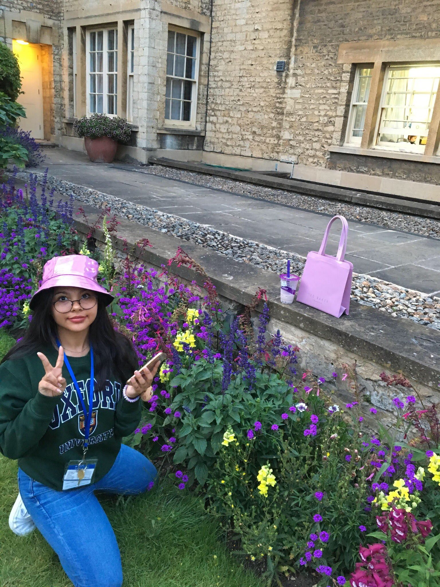
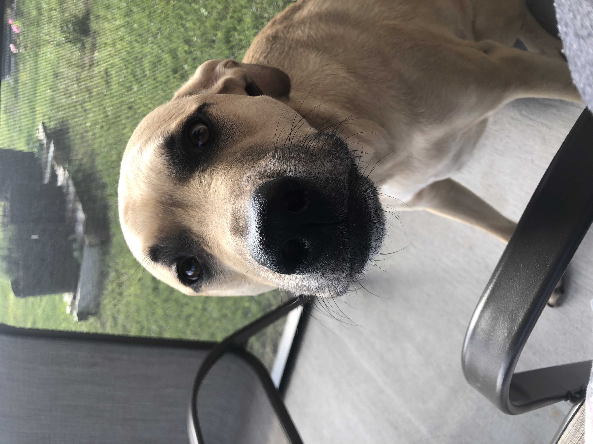
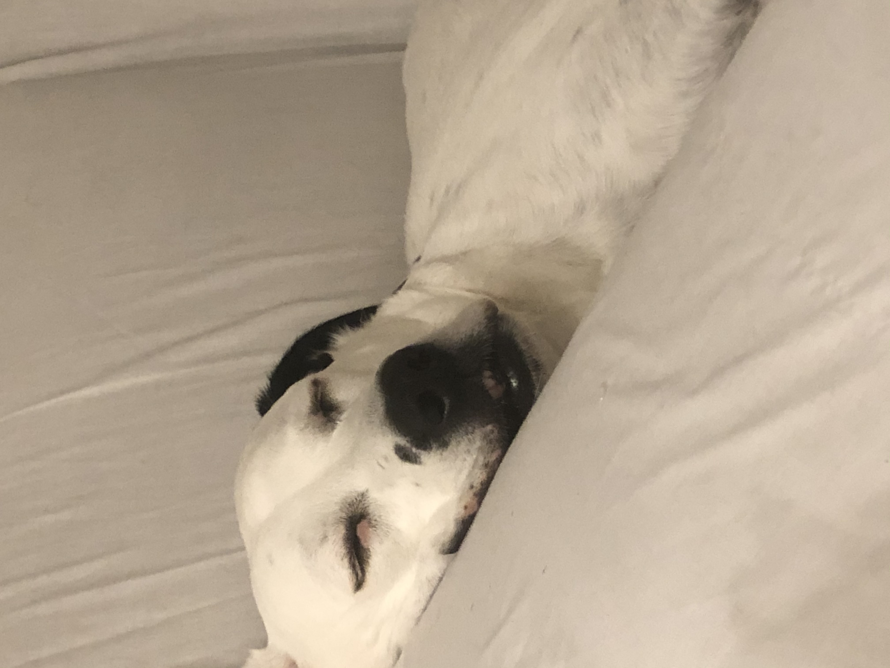
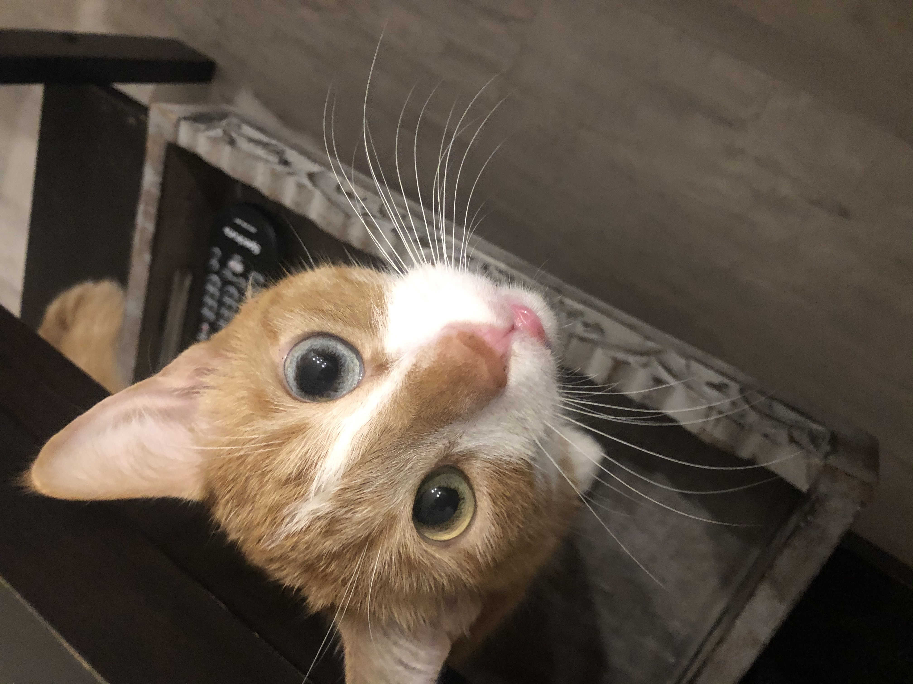

- Fact 1
- My favorite food is probably any type of noodle or Guineo which is a Colombian breakfast dish. To make Guineo, you boil green plantains until they're soft, take them out of their peel, mash them together with butter and Colombian cheese, and then you have an amazing breakfast!
- Fact 2
- I have camped for concerts two times. I once camped in the beginning of January in Newark at the Prudential Center, so it was snowing! 
- Fact 3
- I did a Study Abroad program at the University of Oxford! I studied the natural sciences and realized I didn't want to go into it, however I made a lot of long lasting friends that I still talk to today. 
- Fact 4
- My mom is Colombian and my dad is mixed with Palestinian and Bolivian. This cultural mixture makes my life more fun and interesting since I get to learn about all three cultures through my parents. It also makes me hungrier since all the food is amazing!
- Fact 5
- I have an older brother and he has 3 pets! Two dogs and one cat.   
૮꒰ ˶• ༝ •˶꒱ა ♡
૮꒰ ˶• ༝ •˶꒱ა ♡
૮꒰ ˶• ༝ •˶꒱ა ♡
૮꒰ ˶• ༝ •˶꒱ა ♡
૮꒰ ˶• ༝ •˶꒱ა ♡